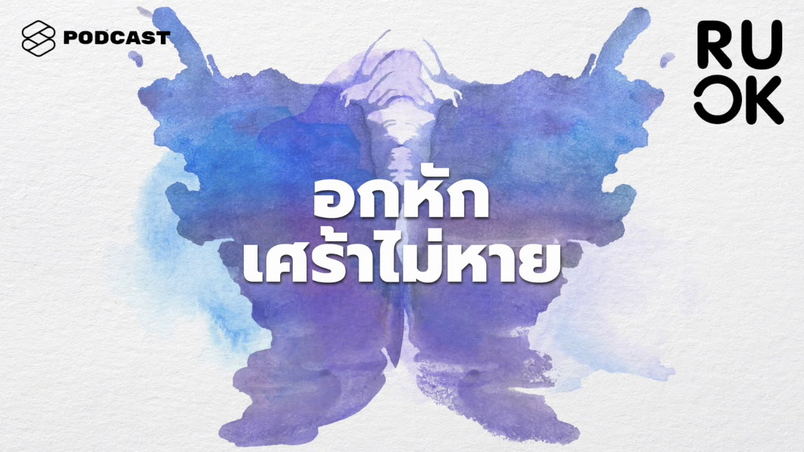

BluEase
แบบประเมิน
คลังความรู้
สถานที่รักษา
โรคที่เกี่ยวข้อง
Youtube & Podcast
Application
Books
ภาวะ Dead Inside ใจพัง แต่ยังต้องเดินต่อไป
Alljit
ความผิดหวังเป็นเรื่องธรรมดาของชีวิต แต่ควรเปลี่ยนวิธีคิดก่อนจะกลายเป็นกับดัก
The Standard Podcast

5 ขั้นตอนทางจิตวิทยาของการอกหัก และถ้าเศร้าหนักเกินเยียวยาไปหาจิตแพทย์ได้ไหม
The Standard Podcast
ความรู้สึกเศร้า แบบไม่รู้สาเหตุ
Alljit
ความรู้สึกเศร้า แบบไม่รู้สาเหตุ
Alljit
ความรู้สึกเศร้า แบบไม่รู้สาเหตุ
Alljit